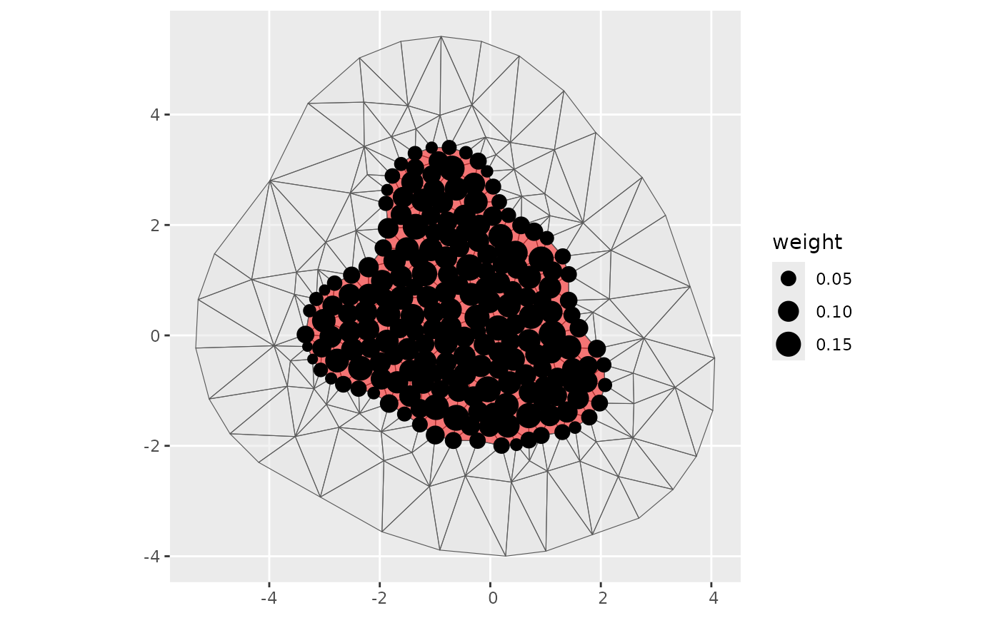

Construct integration points on tensor product spaces
Usage
fm_int(domain, samplers = NULL, ...)
# S3 method for class 'list'
fm_int(domain, samplers = NULL, ...)
# S3 method for class 'numeric'
fm_int(domain, samplers = NULL, name = "x", ...)
# S3 method for class 'character'
fm_int(domain, samplers = NULL, name = "x", ...)
# S3 method for class 'factor'
fm_int(domain, samplers = NULL, name = "x", ...)
# S3 method for class 'SpatRaster'
fm_int(domain, samplers = NULL, name = "x", ...)
# S3 method for class 'fm_lattice_2d'
fm_int(domain, samplers = NULL, name = "x", ...)
# S3 method for class 'fm_mesh_1d'
fm_int(domain, samplers = NULL, name = "x", int.args = NULL, ...)
# S3 method for class 'fm_mesh_2d'
fm_int(
domain,
samplers = NULL,
name = NULL,
int.args = NULL,
format = NULL,
...
)
# S3 method for class 'inla.mesh.lattice'
fm_int(domain, samplers = NULL, name = "x", ...)
# S3 method for class 'inla.mesh.1d'
fm_int(domain, samplers = NULL, name = "x", int.args = NULL, ...)
# S3 method for class 'inla.mesh'
fm_int(
domain,
samplers = NULL,
name = NULL,
int.args = NULL,
format = NULL,
...
)Arguments
- domain
Functional space specification; single domain or a named list of domains
- samplers
For single domain
fm_intmethods, an object specifying one or more subsets of the domain, and optional weighting in aweightvariable. Forfm_int.list, a list of sampling definitions, where data frame elements may contain information for multiple domains, in which case each row represent a separate tensor product integration subspace.- ...
Additional arguments passed on to other methods
- name
For single-domain methods, the variable name to use for the integration points. Default 'x'
- int.args
List of arguments passed to line and integration methods.
method: "stable" (to aggregate integration weights onto mesh nodes) or "direct" (to construct a within triangle/segment integration scheme without aggregating onto mesh nodes)nsub1,nsub2: integers controlling the number of internal integration points before aggregation. Points per triangle:(nsub2+1)^2. Points per knot segment:nsub1
- format
character; determines the output format, as either "sf" (default when the sampler is
NULL) or "sp". WhenNULL, determined by the sampler type.
Value
A data.frame, tibble, sf, or SpatialPointsDataFrame of 1D and
2D integration points, including a weight column and .block column.
Methods (by class)
fm_int(list): Multi-domain integrationfm_int(numeric): Discrete double or integer space integrationfm_int(character): Discrete character space integrationfm_int(factor): Discrete factor space integrationfm_int(SpatRaster):SpatRasterintegration. Not yet implemented.fm_int(fm_lattice_2d):fm_lattice_2dintegration. Not yet implemented.fm_int(fm_mesh_1d):fm_mesh_1dintegration. Supported samplers:NULLfor integration over the entire domain;A length 2 vector defining an interval;
A 2-column matrix with a single interval in each row;
A tibble with a named column containing a matrix, and optionally a
weightcolumn.
fm_int(fm_mesh_2d):fm_mesh_2dintegration. Any sampler class with an associatedfm_int_mesh_2d()method is supported.
Examples
# Integration on the interval (2, 3.5) with Simpson's rule
ips <- fm_int(fm_mesh_1d(0:4), samplers = cbind(2, 3.5))
plot(ips$x, ips$weight)
# Create integration points for the two intervals [0,3] and [5,10]
ips <- fm_int(
fm_mesh_1d(0:10),
matrix(c(0, 3, 5, 10), nrow = 2, byrow = TRUE)
)
plot(ips$x, ips$weight)
# Convert a 1D mesh into integration points
mesh <- fm_mesh_1d(seq(0, 10, by = 1))
ips <- fm_int(mesh, name = "time")
plot(ips$time, ips$weight)
if (require("ggplot2", quietly = TRUE)) {
#' Integrate on a 2D mesh with polygon boundary subset
ips <- fm_int(fmexample$mesh, fmexample$boundary_sf[[1]])
ggplot() +
geom_sf(data = fm_as_sfc(fmexample$mesh, multi = TRUE), alpha = 0.5) +
geom_sf(data = fmexample$boundary_sf[[1]], fill = "red", alpha = 0.5) +
geom_sf(data = ips, aes(size = weight)) +
scale_size_area()
}

ips <- fm_int(
fm_mesh_1d(0:10, boundary = "cyclic"),
rbind(c(0, 3), c(5, 10))
)
plot(ips$x, ips$weight)